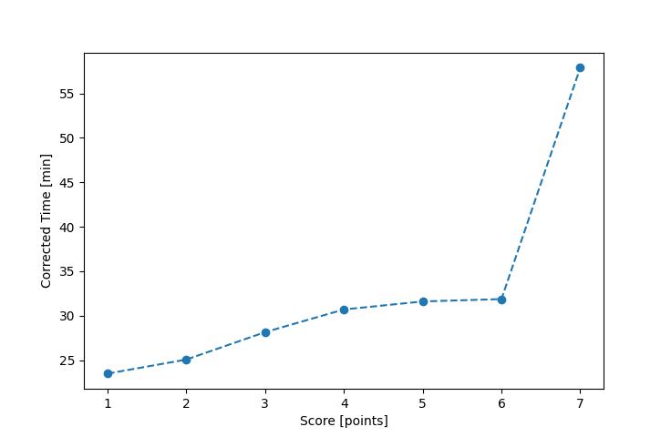

| Wind: | 2-3 (BFT) |
|---|---|
| RC: | Mike_F , Nedra_F , Chris_E |
| Date: | May 19, 2019 |
| Notes: | M2 280 |
| Rank / Score | Name | Boat | Input Time [mm:ss] | Input Offset [mm:ss] | Race Time [mm:ss] | Race Time [s] | Handicap | Corrected Time [s] | Corrected Time [mm:ss] |
|---|---|---|---|---|---|---|---|---|---|
| 1.0 | Art_M | SWSX | 23:40 | 00:00 | 23:40 | 1420 | 0.95900 | 1481 | 24:41 |
| 2.0 | Rod_H | LASEM | 26:28 | 00:00 | 26:28 | 1588 | 0.97300 | 1632 | 27:12 |
| 3.0 | Bill_P | SF | 28:17 | 00:00 | 28:17 | 1697 | 1.00400 | 1690 | 28:10 |
| 4.0 | David_Bu | SF | 29:08 | 00:00 | 29:08 | 1748 | 1.00400 | 1741 | 29:01 |
| 5.0 | Ron_F | F5 | 28:10 | 00:00 | 28:10 | 1690 | 0.96600 | 1749 | 29:09 |
| 6.0 | Lewis_V | BCN | 25:54 | 00:00 | 25:54 | 1554 | 0.87000 | 1786 | 29:46 |
| 7.0 | Pat_B | WF | 29:26 | 00:00 | 29:26 | 1766 | 0.91700 | 1926 | 32:06 |
| 8.0 | David_G | LASE | 60:00 | 00:00 | 60:00 | 3600 | 0.92300 | 3900 | 65:00 |

Application Notes:
All race results are unofficial
View source code at https://github.com/cessnao3/portsmouthracecalc/